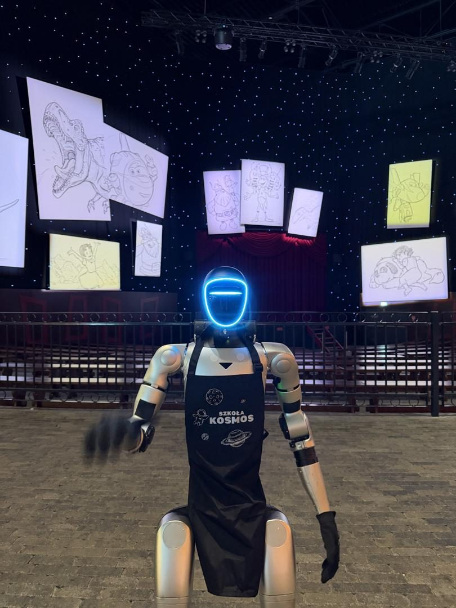
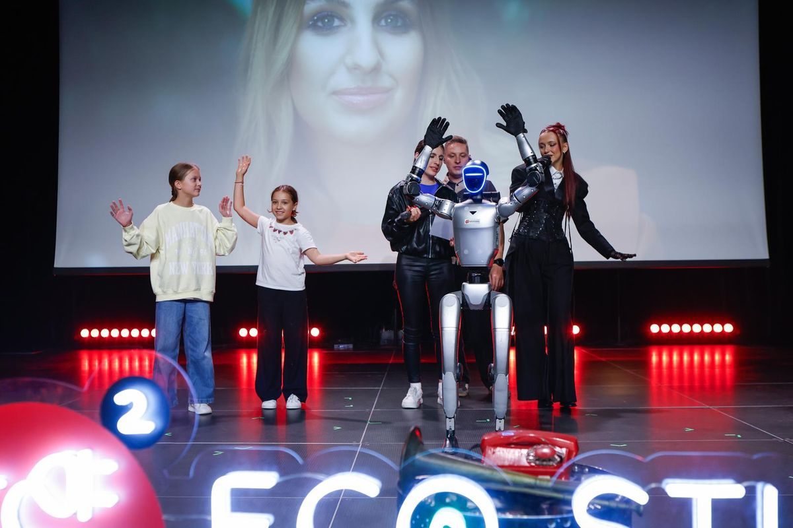

- Startseite
- Eventratgeber
- Abiball planen
Feiern · Abiball · Planung
Abiball planen: Kosten, Location, Programm und Motto-Ideen
Der Abiball ist für viele der erste große Ball ihres Lebens — und für das Abikomitee ein Projekt mit fünfstelligem Budget. Hier lesen Sie, wann Sie was planen sollten, was ein Abiball kostet, wie Sie ihn finanzieren, welche Location passt und wie Ablauf, Motto und Programm zu einem Abend werden, der bleibt.

Das Abikomitee: wer was macht
Ein Abiball ist zu groß für eine Person. Bewährt hat sich ein Komitee mit klaren Zuständigkeiten:
- Finanzen: Kasse, Budget, Sponsoren, Kartenverkauf.
- Location und Catering: Angebote, Vertrag, Menü, Getränke.
- Programm: Ablauf, Reden, Einlauf, Awards, Showacts, Moderation.
- Deko und Motto: Konzept, Material, Aufbau.
- Technik und Musik: DJ oder Band, Licht, Beamer, Mikrofone.
- Fotos und Medien: Fotograf, Fotobox, Abizeitung, Social Media.
Zeitplan für die Planung
| Wann | Was |
|---|---|
| Beginn der Oberstufe | Komitee gründen, erste Finanzierungsaktionen |
| 12–18 Monate vorher | Location reservieren, Termin mit der Schule abstimmen |
| 9–12 Monate vorher | Budget, Motto, Catering, DJ oder Band |
| 6 Monate vorher | Fotograf, Showacts, Deko-Konzept, Sponsoren |
| 3 Monate vorher | Kartenverkauf, Sitzplan, Ablauf |
| 4 Wochen vorher | Reden, Einlauflieder, Awards, Technikprobe |
| Am Abend | Aufbau, Generalprobe, Einlass, Programm |
Was ein Abiball kostet
Abibälle sind teurer geworden. Laut news4teachers können die Gesamtkosten einer Stufe leicht fünfstellig werden, oft 20.000 € oder mehr; die Location liegt nicht selten im vierstelligen Bereich. Ein Beispiel: Eine Stadthalle nennt für ein Paket bis 600 Personen mit Bestuhlung und Reinigung 7.500 €, das Catering muss zusätzlich gebucht werden. Ein Kommentar der Rheinischen Post nennt Kosten von rund 500 € pro Schülerin oder Schüler.
Die größten Posten sind Location und Catering, gefolgt von Technik, Musik, Deko, Fotograf und Programm. Ein Puffer von zehn Prozent schützt vor bösen Überraschungen.
Finanzierung: so kommt das Geld zusammen
- Verkaufsaktionen: Kuchen, Waffeln, Getränke auf Schulfesten und Elternabenden.
- Abi-Partys: mit Eintritt — gut organisiert und mit Aufsicht.
- Merchandise: Abipullis, Shirts, Tassen mit dem Motto.
- Sponsoring: lokale Unternehmen, die im Abibuch oder auf einer Sponsorenwand erscheinen.
- Tombola und Spenden: Preise von Händlern aus der Region.
- Eintrittskarten: für Gäste, oft mit Menü — der Kartenpreis sollte für alle Familien bezahlbar bleiben.
Laut news4teachers ist eigenes Fundraising inzwischen fast selbstverständlich, damit die Kartenpreise in einem akzeptablen Rahmen bleiben.
Die passende Location
- Stadthalle — viel Platz, oft mit Bühne und Technik, Catering meist vorgegeben.
- Hotel mit Ballsaal — festlich, Catering aus einer Hand, Übernachtung für Gäste möglich.
- Eventlocation — flexibel, oft mit Außenbereich für den Sektempfang.
- Aula — günstig, braucht aber viel Deko und Technik.
Rechnen Sie die Kapazität mit allen Gästen: Abiturientinnen und Abiturienten, Eltern, Geschwister, Lehrkräfte — schnell mehrere Hundert Personen.
Ablauf eines Abiballs
| Uhrzeit | Programm |
|---|---|
| 18:00 | Sektempfang, Fotos an der Fotowand |
| 19:00 | Einlauf des Jahrgangs mit eigenen Liedern |
| 19:30 | Reden: Schulleitung, Stufensprecher, Eltern |
| 20:00 | Abendessen |
| 21:00 | Abi-Awards und Ehrungen der Lehrkräfte, Diashow |
| 21:45 | Eröffnungstanz, Showact |
| 22:00 | Party mit DJ oder Band |
| 01:00 | Ende oder Afterparty |
Motto-Ideen und Deko
- Goldene Zwanziger — Art déco, Gold, Federn, Swing.
- Hollywood-Nacht — roter Teppich, Sterne, Abi-Awards wie bei einer Preisverleihung.
- Casino-Nacht — Spieltische mit Spielgeld, siehe Casino-Abend.
- Sternennacht — Lichterketten, dunkelblaue Deko, Sternenhimmel an der Decke.
- Maskenball — venezianische Masken am Eingang für alle.
- Sommernacht — Blumen, Laternen, Sektempfang im Garten.
Programm und Showacts
Neben Reden und Awards bleiben vor allem die Überraschungen in Erinnerung: eine Lehrerband, ein Video mit Grüßen aus den Schuljahren, eine Tanzshow, eine Feuershow im Außenbereich oder eine Fotobox, an der sich die Cliquen den ganzen Abend sammeln. Viele weitere Ideen finden Sie unter Showact buchen und Fotobox mieten.
Ein Roboter für den Jahrgang
Ein humanoider Roboter ist für einen Abiturjahrgang der perfekte Showact: Er empfängt die Gäste, überreicht die Abi-Awards, tanzt eine Choreografie und posiert danach mit jeder Clique für Fotos. Auf Schulveranstaltungen ist er längst im Einsatz — etwa beim Schuljahresbeginn der Kosmos-Schule.

Ein Veranstaltungstag kostet ab 2.500 €, inklusive Operator, Anfahrt in ganz Deutschland, Branding mit Abimotto und Haftpflichtversicherung — mehr unter Roboter für Bildungs-Events.
Häufige Fragen
Für einen ganzen Jahrgang kommen schnell 20.000 € und mehr zusammen, berichtet das Bildungsportal news4teachers. Allein die Location liegt nicht selten im vierstelligen Bereich; eine Stadthalle nennt zum Beispiel 7.500 € für ein Paket bis 600 Personen mit Bestuhlung und Reinigung, Catering kommt verpflichtend hinzu.
Für die Location am besten 12 bis 18 Monate vorher — so lange beträgt laut news4teachers inzwischen oft die Vorlaufzeit. Komitee, Budget und Finanzierungsideen sollten schon zu Beginn der Oberstufe stehen.
Mit Kuchen- und Waffelverkauf, Abi-Partys, Verkauf von Abipullis, Sponsoring lokaler Unternehmen, einer Tombola, Spendenaktionen und den Eintrittskarten für Gäste. Viele Jahrgänge sammeln über die ganze Oberstufe, damit die Kartenpreise bezahlbar bleiben.
Typisch sind Sektempfang und Fotos, der Einlauf der Abiturientinnen und Abiturienten mit eigenen Liedern, Reden von Schulleitung, Stufensprechern und Eltern, Abendessen, Ehrungen und Abi-Awards, Eröffnungstanz und danach Party mit DJ oder Band.
Stadthallen, Hotels mit Ballsaal, Eventlocations und manchmal die eigene Aula. Wichtig sind Platz für Schüler, Eltern und Lehrkräfte — oft mehrere Hundert Personen —, eine Bühne, Technik, Catering und eine gute Erreichbarkeit.
Abendkleid oder Cocktailkleid, Anzug oder Smoking — der Abiball ist ein festlicher Ball. Gibt es ein Motto, nennt das Komitee den passenden Dresscode früh, auch für Eltern.
Tanzshow, Akrobatik, Feuershow im Außenbereich, eine Lehrerband oder ein humanoider Roboter, der die Abiturientinnen und Abiturienten empfängt, die Abi-Awards überreicht und tanzt.